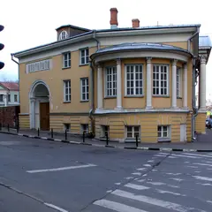

У метро · ЦАО
Куда сходить у метро «Красные Ворота»
Для 5 мест из нашего каталога ближайшая станция — «Красные Ворота» (ЦАО): 2 музея, 1 развлечение, 1 баня или спа и 1 место для прогулки. Например, Галерея «Другое дело», «Сад им. Баумана» и «Усадьба Муравьёвых-Апостолов». Недорогих, примерно до 1 500 ₽ на человека, — 2. 5 готовых планов проходят через эту станцию — например, «Вино с производства», с маршрутом пешком между точками.
- 5 мест
- 5 планов
Места у метро «Красные Ворота» 5
Старая Басманная ул., 15А, стр. 4
Антикварная галерея в особняке XVIII века на Басманной: джаз у винтажного рояля, кабаре и вечера по мотивам фильмов Дэвида Линча.
Подробнее и маршрут: Галерея «Другое дело»Позвать сюда: Галерея «Другое дело»
Фото: Svetlov Artem, CC BY-SA 4.0 · Wikimedia Commons
ул. Старая Басманная, 15, стр. 3
Уютный сад в Басманном районе со сценой и кафе.
Подробнее и маршрут: Сад им. БауманаПозвать сюда: Сад им. Баумана
Фото: Tsitsurskaya, CC BY-SA 4.0 · Wikimedia Commons

Старая Басманная ул., 23/9, стр. 1
Усадьба декабристов на Старой Басманной: лепнина, люстры, полуротонда с видом на улицу и выставки современных художников.
Подробнее и маршрут: Усадьба Муравьёвых-АпостоловПозвать сюда: Усадьба Муравьёвых-Апостолов
Фото: NVO, CC BY-SA 3.0 · Wikimedia Commons
Новая Басманная ул., 16, стр. 8
Новое
Сруб из карельского сухостоя у Красных Ворот: парение с банщиком на дровах, травяной чай с мёдом и квас. Алкоголь под запретом, программы от 35 000 ₽.
Садовая-Спасская ул., 21/1
Новое
Камеди-бар у Красных ворот: сначала играет джаз- или блюз-бэнд, потом выходят три «секретных» комика с ТВ. Шоу почти каждый вечер, в пт–вс по два. Вход строго 18+.


Готовые планы 5
- Сад им. Баумана · Сад · м. Красные Ворота
- 12 минут пешкомUrban Winery · Городская винодельня
Сад Баумана и городская винодельня, где вино делают прямо здесь.
Открыть план: Вино с производстваПозвать сюда: Вино с производства
Фото: Tsitsurskaya, CC BY-SA 4.0 · Wikimedia Commons
- Усадьба Муравьёвых-Апостолов · Музей-усадьба · м. Красные Ворота
- 4 минуты пешкомГалерея «Другое дело» · Галерея в старинной усадьбе
Выставка в усадьбе Муравьёвых-Апостолов с лепниной, люстрами и полуротондой с видом на Старую Басманную, а в четырёх минутах — джаз у винтажного рояля в антикварной галерее «Другое дело».
Открыть план: Усадьба и джаз на БасманнойПозвать сюда: Усадьба и джаз на Басманной
Фото: NVO, CC BY-SA 3.0 · Wikimedia Commons
- Орда · Бурятский ресторан · м. Сретенский бульвар
- 6 минут пешкомСергеич · Стендап-бар с джазом
Бурятская кухня в тихом дворе на Мясницкой, а потом «Сергеич» у Красных ворот: сначала играет джаз- или блюз-бэнд, затем выходят три «секретных» комика с ТВ. Строго 18+.
Открыть план: Бурятский ужин и камеди-барПозвать сюда: Бурятский ужин и камеди-бар
- Галерея «Другое дело» · Галерея в старинной усадьбе · м. Красные Ворота
Антикварная галерея в усадьбе XVIII века: джаз, кабаре и вечера по мотивам Дэвида Линча.
Открыть план: Джаз в особнякеПозвать сюда: Джаз в особняке
Фото: Svetlov Artem, CC BY-SA 4.0 · Wikimedia Commons
- Живица · Баня на дровах · м. Красные Ворота
Сруб из карельского сухостоя у Красных Ворот: парение с банщиком на дровах, травяной чай с мёдом и квас. Алкоголь здесь под запретом — и он не нужен.
Открыть план: Баня на дровах без алкоголяПозвать сюда: Баня на дровах без алкоголя
Как позвать
- Выбери план, место или событие — в карточке адрес, цены и маршрут в Яндекс Картах.
- Нажми «Позвать сюда» — соберётся приглашение-игра для свидания или голосование для компании.
- Отправь ссылку в любой мессенджер: тебе ответят, а компания отметит, куда и когда может. Бесплатно и без регистрации.